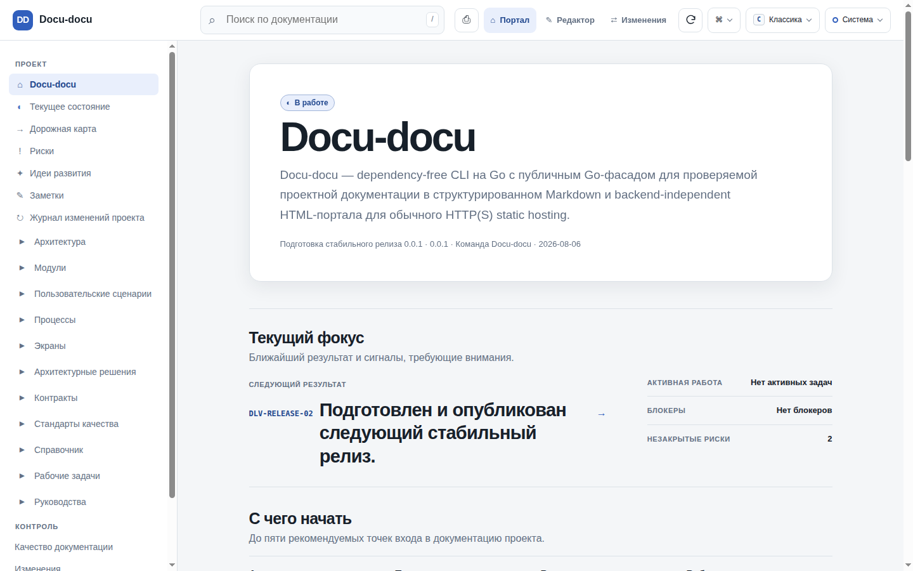
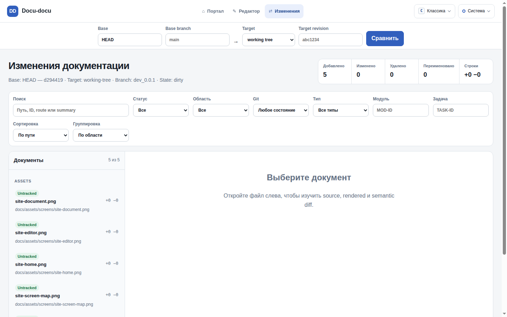

FOR ENGINEERS
Follow architecture, requirements, and implementation context without leaving the repository.
MARKDOWN IN / VERIFIED MODEL OUT
cursor-agent "Refactor the payment gateway to use the new provider"docu-docu task context TASK-PAYMENTS-001 ./docs --format jsonFOR ENGINEERS
Follow architecture, requirements, and implementation context without leaving the repository.
FOR DOCUMENTATION AUTHORS
Check structure and relationships before publishing the same model as a static portal.
FOR AGENTS
Request focused task context and Git-backed changes instead of scanning an undifferentiated archive.
VERIFICATION 01
Validate typed documents, links, transitions, contracts, and relationships locally or in CI.

STATIC OUTPUT
Generate a read-only HTTP portal with no database, CDN, npm runtime, or server process after build.

DETERMINISTIC PIPELINE
Three explicit commands operate on one repository-backed documentation model.
docu-docu check ./docs --strictdocu-docu build ./docs --output ./site --cleandocu-docu serve ./docsGIT-BACKED CONTEXT
Review affected documentation and request focused task context from the same repository state.

INSTALL THE CLI
The installer selects your platform, verifies SHA-256, and installs or updates Docu-docu in your user directory.
curl -fsSL https://github.com/lumenikoly/docu-docu/releases/latest/download/install.sh | sh
irm https://github.com/lumenikoly/docu-docu/releases/latest/download/install.ps1 | iex
Eight ways one repository-backed Markdown model becomes useful to people, agents, and CI.
Catch broken structure, relationships, routes, contracts, and verification links before they reach the portal or CI.
docu-docu check ./docs
Turn the same Markdown model into a searchable static portal with diagrams, traceability, themes, and no backend.
docu-docu build ./docs
Work live in the browser with safe previews, precise diagnostics, conflict-aware saves, and instant rebuilds.
/_docu-docu/editor/
See what Git changed at source, rendered, and semantic levels—including diagrams, APIs, assets, and task impact.
/changes/
Generate a navigable product map from documented screens, states, transitions, and use cases.
screens/SC-*.md
Walk a use case screen by screen, including actions, errors, history, and accessible hotspots.
use-cases/UC-*.html#play
Give an agent only the requirements, rules, dependencies, and verification that belong to one task.
docu-docu task context TASK-ID ./docs
Use the installed AI skill to reconcile documentation with the whole repository or only the current Git diff against HEAD.
$docu-docu refresh diff
An AI-skill establishes the documentation; the Go CLI turns it into a live local workspace.
$docu-docu init
The installed AI-skill analyzes the repository and creates the initial documentation.
docs/**/*.md
Editable Markdown remains the source of truth.
docu-docu serve ./docs
The Go CLI builds the portal, watches files, and refreshes the model.
Portal · Editor · Changes · Screen Map · API Docs
One local UI brings every view together.
docu-docu task context TASK-ID ./docs
The coding agent loads the task's scope, rules, dependencies, related documents, and verification before implementation.